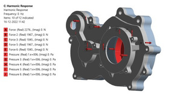

Two-stage ATV reduction gearbox
Designed a fixed-ratio gearbox for an ATV, checked assembly clearances and structural behavior, and coordinated machining.
Design, analysis & manufactured hardware

Brief
The ATV drivetrain needed a fixed reduction ratio for propulsion. The gears and housing had to fit the drivetrain layout and leave clearance for assembly.
My work
Designed the gears and housing in SolidWorks, ran ANSYS structural analyses, and coordinated CNC machining and gear hobbing with suppliers.
- Selected the reduction ratio and gear parameters for the ATV drivetrain.
- Modeled the gears and housing together in SolidWorks to check assembly clearances.
- Used ANSYS to assess stress and factor of safety and explored ways to reduce weight through topology optimization.
- Applied design for manufacture and assembly when coordinating machining and gear hobbing.
Result
The design reached manufactured hardware. The housing analysis supported design development before machining.